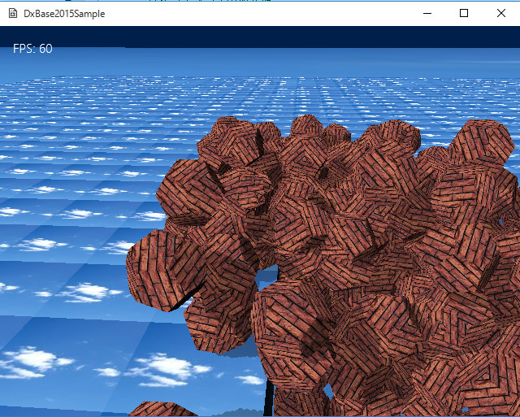

図4010a
そして、その動作スピードは、実行環境にもよりますが、一般的なWindows8.1動作要件を満たすハードウェアであれば、ほぼ60FPSを維持したまま動作するのがわかります。
//--------------------------------------------------------------------------------------
//const D3D11_INPUT_ELEMENT_DESC VertexPositionNormalTextureMatrixLayout[];
//用途: 位置と法線とテクスチャと行列を持つ入力レイアウトの定義
//--------------------------------------------------------------------------------------
const D3D11_INPUT_ELEMENT_DESC VertexPositionNormalTextureMatrixLayout[] =
{
{ "SV_Position", 0, DXGI_FORMAT_R32G32B32_FLOAT,
0, D3D11_APPEND_ALIGNED_ELEMENT, D3D11_INPUT_PER_VERTEX_DATA, 0 },
{ "NORMAL", 0, DXGI_FORMAT_R32G32B32_FLOAT,
0, D3D11_APPEND_ALIGNED_ELEMENT, D3D11_INPUT_PER_VERTEX_DATA, 0 },
{ "TEXCOORD", 0, DXGI_FORMAT_R32G32_FLOAT,
0, D3D11_APPEND_ALIGNED_ELEMENT, D3D11_INPUT_PER_VERTEX_DATA, 0 },
{ "MATRIX", 0, DXGI_FORMAT_R32G32B32A32_FLOAT,
1, 0, D3D11_INPUT_PER_INSTANCE_DATA, 1 },
{ "MATRIX", 1, DXGI_FORMAT_R32G32B32A32_FLOAT,
1, 16, D3D11_INPUT_PER_INSTANCE_DATA, 1 },
{ "MATRIX", 2, DXGI_FORMAT_R32G32B32A32_FLOAT,
1, 32, D3D11_INPUT_PER_INSTANCE_DATA, 1 },
{ "MATRIX", 3, DXGI_FORMAT_R32G32B32A32_FLOAT,
1, 48, D3D11_INPUT_PER_INSTANCE_DATA, 1 },
};
//--------------------------------------------------------------------------------------
// struct VertexPositionNormalTextureMatrix;
//用途: 位置と法線とテクスチャと行列を持つ頂点の定義
//--------------------------------------------------------------------------------------
struct VertexPositionNormalTextureMatrix
{
VertexPositionNormalTextureMatrix()
{ }
VertexPositionNormalTextureMatrix(XMFLOAT3 const& position,
XMFLOAT3 const& normal, XMFLOAT2 const& textureCoordinate,
XMFLOAT4X4 const& matrix)
: position(position),
normal(normal),
textureCoordinate(textureCoordinate),
matrix(matrix)
{ }
VertexPositionNormalTextureMatrix(FXMVECTOR position,
FXMVECTOR normal, FXMVECTOR textureCoordinate,
FXMMATRIX const& matrix)
{
XMStoreFloat3(&this->position, position);
XMStoreFloat3(&this->normal, normal);
XMStoreFloat2(&this->textureCoordinate, textureCoordinate);
XMStoreFloat4x4(&this->matrix, matrix);
}
XMFLOAT3 position;
XMFLOAT3 normal;
XMFLOAT2 textureCoordinate;
XMFLOAT4X4 matrix;
static const D3D11_INPUT_ELEMENT_DESC* GetVertexElement(){
return VertexPositionNormalTextureMatrixLayout;
}
static UINT GetNumElements(){
return ARRAYSIZE(VertexPositionNormalTextureMatrixLayout);
}
};
cbuffer SimpleConstantBuffer : register(b0)
{
float4x4 View : packoffset(c0);
float4x4 Projection : packoffset(c4);
float4 LightDir : packoffset(c8);
float4 Param : packoffset(c9);
float4 LPos : packoffset(c10);
float4 EyePos : packoffset(c11);
float4x4 LView : packoffset(c12);
float4x4 LProjection : packoffset(c16);
};
struct VertexShaderInput
{
float4 pos : SV_Position;
float3 norm : NORMAL;
float2 tex : TEXCOORD0;
float4x4 mat : MATRIX; // インスタンスごとに設定される行列
uint InstanceId : SV_InstanceID; // インスタンスＩＤ
};
struct PixelShaderInput
{
float4 pos : SV_POSITION;
float3 norm : NORMAL;
float3 lRay : NORMAL1;
float3 View : NORMAL2;
float2 tex : TEXCOORD0;
float4 posLWVP : POSITION1;
float4 lightSpacePos : POSITION2;
};
#include "InstanceInc.hlsli"
PixelShaderInput main(VertexShaderInput input)
{
//ピクセルシェーダーに渡す変数
PixelShaderInput vertexShaderOutput;
//頂点の位置を変換
float4 pos = float4(input.pos.xyz, 1.0f);
//ワールド変換
pos = mul(pos, input.mat);
//ビュー変換
pos = mul(pos, View);
//射影変換
pos = mul(pos, Projection);
//ピクセルシェーダに渡す変数に設定
vertexShaderOutput.pos = pos;
//テクスチャのUV値を設定
vertexShaderOutput.tex = input.tex;
//ライティング用に法線をワールド変換して設定
vertexShaderOutput.norm = mul(input.norm, (float3x3)input.mat);
//影用の値を計算
float4 modelPos = float4(input.pos.xyz, 1.0f);
modelPos = mul(modelPos, input.mat);
float4 lightSpacePos = mul(modelPos, LView);
lightSpacePos = mul(lightSpacePos, LProjection);
vertexShaderOutput.lightSpacePos = lightSpacePos;
// Light ray
float3 lRay = LPos.xyz - modelPos.xyz;
vertexShaderOutput.lRay = lRay;
vertexShaderOutput.View = EyePos.xyz - modelPos.xyz;
float4x4 LightWorldViewProj = input.mat;
LightWorldViewProj = mul(LightWorldViewProj, LView);
LightWorldViewProj = mul(LightWorldViewProj, LProjection);
vertexShaderOutput.posLWVP = mul(input.pos, LightWorldViewProj);
//ピクセルシェーダに出力
//returnはピクセルシェーダに渡すことを意味する
return vertexShaderOutput;
}
#include "InstanceInc.hlsli"
Texture2D<float4> SimpleTexture : register(t0);
// 深度マップ
Texture2D g_DepthMap : register(t1);
SamplerState SimpleSampler : register(s0);
SamplerState g_SamplerDepthMap : register(s1);
float4 main(PixelShaderInput input) : SV_TARGET
{
//影があるかないかを決定
float3 shadowColor = float3(1.0f, 1.0f, 1.0f);
// テクセルを計算
float2 texel =
float2(
input.posLWVP.x / input.posLWVP.w * 0.5f + 0.5f,
input.posLWVP.y / input.posLWVP.w * -0.5f + 0.5f
);
float depth = input.posLWVP.z / input.posLWVP.w - 0.00005f;
float sm = g_DepthMap.Sample(g_SamplerDepthMap, texel).x;
if (texel.x >= 0 && texel.x <= 1 && texel.y >= 0 && texel.y <= 1){
// 現在の深度値と深度マップ上の深度値を比較
if (sm < depth){
//影は70%の明度
shadowColor.xyz = 0.7f;
}
else{
shadowColor.xyz = 1.0f;
}
}
float3 lightdir = normalize(LightDir.xyz);
float3 N1 = normalize(input.norm);
//最終色の決定
//まずライティングの影響
float4 RetColor = saturate(dot(N1, -lightdir) + float4(0.7, 0.7, 0.7, 1.0));
//ライトの透明処理はなし
RetColor.a = 1;
//テクスチャと合わせる
RetColor = SimpleTexture.Sample(SimpleSampler, input.tex) * RetColor;
//影と合わせる
RetColor.rgb = RetColor.rgb * shadowColor;
//決定色リターン
return RetColor;
}
cbuffer CustomShadowmapConstantBuffer : register(b0)
{
float4x4 View : packoffset(c0);
float4x4 Projection : packoffset(c4);
};
struct VertexShaderInput
{
float4 pos : SV_Position;
float3 norm : NORMAL;
float2 tex : TEXCOORD0;
float4x4 mat : MATRIX; // インスタンスごとに設定される行列
uint InstanceId : SV_InstanceID; // インスタンスＩＤ
};
float4 main(VertexShaderInput input) : SV_POSITION
{
float4 Output;
input.pos.w = 1.0f;
Output = mul(input.pos, input.mat);
Output = mul(Output, View);
Output = mul(Output, Projection);
return Output;
}
//インスタンスシャドウマップ用コンスタントバッファ構造体
struct InstanceShadowmapConstantBuffer
{
XMMATRIX mView;
XMMATRIX mProj;
InstanceShadowmapConstantBuffer() {
memset(this, 0, sizeof(InstanceShadowmapConstantBuffer));
};
};
//--------------------------------------------------------------------------------------
// class CBInstanceShadowmap :
// public ConstantBuffer<CBInstanceShadowmap,InstanceShadowmapConstantBuffer>;
// 用途: インスタンスシャドウマップコンスタントバッファ
//--------------------------------------------------------------------------------------
class CBInstanceShadowmap :
public ConstantBuffer<CBInstanceShadowmap, InstanceShadowmapConstantBuffer>{
public:
};
//--------------------------------------------------------------------------------------
// class VSInstanceShadowmap :
// public VertexShader<VSInstanceShadowmap, VertexPositionNormalTextureMatrix>;
// 用途: VSInstanceShadowmap頂点シェーダ
//--------------------------------------------------------------------------------------
class VSInstanceShadowmap :
public VertexShader<VSInstanceShadowmap, VertexPositionNormalTextureMatrix>{
public:
//構築
VSInstanceShadowmap();
};
//--------------------------------------------------------------------------------------
// struct InstanceConstantBuffer;
// 用途: 入力バッファのCPU側構造体
//--------------------------------------------------------------------------------------
struct InstanceConstantBuffer
{
Matrix4X4 View;
Matrix4X4 Projection;
Vector4 LightDir;
Vector4 Param; //汎用パラメータ
Vector4 LPos;
Vector4 EyePos;
Matrix4X4 LView;
Matrix4X4 LProjection;
InstanceConstantBuffer() {
memset(this, 0, sizeof(InstanceConstantBuffer));
};
};
//シェーダ宣言
//コンスタントバッファ
class CBInstance : public ConstantBuffer < CBInstance, InstanceConstantBuffer>{
public:
};
//頂点シェーダ
class VSInstance : public VertexShader<VSInstance, VertexPositionNormalTextureMatrix> {
public:
VSInstance();
};
//ピクセルシェーダ
class PSInstance : public PixelShader<PSInstance>
{
public:
PSInstance();
};
//シャドウマップシェーダー実体
//シャドウマップコンスタントバッファシングルトン処理
unique_ptr<CBInstanceShadowmap, CBInstanceShadowmap::Deleter> CBInstanceShadowmap::m_Ptr;
//シャドウマップ頂点シェーダシングルトン処理
unique_ptr< VSInstanceShadowmap, VSInstanceShadowmap::Deleter> VSInstanceShadowmap::m_Ptr;
//頂点シェーダ実体
VSInstanceShadowmap::VSInstanceShadowmap() :
VertexShader(App::GetApp()->m_wstrRelativeShadersPath + L"VSInstanceShadowmap.cso")
{}
//描画用シェーダー実体
//コンスタントバッファシングルトン処理
unique_ptr<CBInstance, CBInstance::Deleter> CBInstance::m_Ptr;
//頂点シェーダシングルトン処理
unique_ptr<VSInstance, VSInstance::Deleter> VSInstance::m_Ptr;
//頂点シェーダ実体
VSInstance::VSInstance() :
VertexShader(App::GetApp()->m_wstrRelativeShadersPath + L"VSInstance.cso")
{}
//ピクセルシェーダシングルトン処理
unique_ptr<PSInstance, PSInstance::Deleter> PSInstance::m_Ptr;
//ピクセルシェーダ実体
PSInstance::PSInstance() :
PixelShader(App::GetApp()->m_wstrRelativeShadersPath + L"PSInstance.cso")
{}
void DrawBoxManager::Draw(){
//デバイスの取得
auto Dev = App::GetApp()->GetDeviceResources();
auto pDx11Device = Dev->GetD3DDevice();
auto pID3D11DeviceContext = Dev->GetD3DDeviceContext();
//ステータスのポインタ
auto RenderStatePtr = GetStage()->GetRenderState();
//シャドウマップのレンダラーターゲット
auto ShadoumapPtr = GetStage()->GetShadowMapRenderTarget();
auto PtrT = GetComponent<Transform>();
//ステージからカメラを取り出す
auto PtrCamera = GetStage()->GetTargetCamera();
//カメラの取得
Matrix4X4 View, Proj, WorldViewProj;
View = PtrCamera->GetViewMatrix();
Proj = PtrCamera->GetProjMatrix();
//描画するメッシュリソースを取得
auto MeshRes = App::GetApp()->GetResource<MeshResource>(m_MeshKey);
//コンスタントバッファの設定
InstanceConstantBuffer cb1;
ZeroMemory(&cb1, sizeof(cb1));
cb1.View = Matrix4X4EX::Transpose(View);
cb1.Projection = Matrix4X4EX::Transpose(Proj);
//ライトの設定
//ステージから0番目のライトを取り出す
auto PtrLight = GetStage()->GetTargetLight(0);
cb1.LightDir = PtrLight->GetDirectional();
cb1.LightDir.w = 1.0f;
Matrix4X4 LightView, LightProj, LightViewProj;
Vector3 LightDir = -1.0 * PtrLight->GetDirectional();
Vector3 LightAt = PtrCamera->GetAt();
Vector3 LightEye = LightDir;
LightEye *= Shadowmap::GetLightHeight();
LightEye = LightAt + LightEye;
//ライトのビューと射影を計算
LightView.LookAtLH(LightEye, LightAt, Vector3(0, 1.0f, 0));
LightProj.OrthographicLH(Shadowmap::GetViewWidth(), Shadowmap::GetViewHeight(),
Shadowmap::GetLightNear(), Shadowmap::GetLightFar());
LightViewProj = LightView * LightProj;
Matrix4X4 LWMatrix = PtrT->GetWorldMatrix() * LightViewProj;
//コンスタントバッファに設定
cb1.LPos = LightEye;
cb1.LPos.w = 0;
cb1.EyePos = PtrCamera->GetEye();
cb1.EyePos.w = 0;
cb1.LView = Matrix4X4EX::Transpose(LightView);
cb1.LProjection = Matrix4X4EX::Transpose(LightProj);
//コンスタントバッファの更新
pID3D11DeviceContext->UpdateSubresource(
CBInstance::GetPtr()->GetBuffer(), 0, nullptr, &cb1, 0, 0);
//ストライドとオフセット
//形状の頂点バッファと行列バッファを設定
UINT stride[2] = { sizeof(VertexPositionNormalTexture), sizeof(Matrix4X4) };
UINT offset[2] = { 0, 0 };
ID3D11Buffer* pBuf[2] = { MeshRes->GetVertexBuffer().Get(), m_MatrixBuffer.Get() };
pID3D11DeviceContext->IASetVertexBuffers(0, 2, pBuf, stride, offset);
//インデックスバッファのセット
pID3D11DeviceContext->IASetIndexBuffer(
MeshRes->GetIndexBuffer().Get(), DXGI_FORMAT_R16_UINT, 0);
//描画方法（3角形）
pID3D11DeviceContext->IASetPrimitiveTopology(D3D11_PRIMITIVE_TOPOLOGY_TRIANGLELIST);
//ステータスのポインタ
//テクスチャを取得
ID3D11ShaderResourceView* pNull[1] = { 0 };
ID3D11SamplerState* pNullSR[1] = { 0 };
//テクスチャを設定
auto PtrTextureResource = App::GetApp()->GetResource<TextureResource>(m_TextureKey);
pID3D11DeviceContext->PSSetShaderResources(
0, 1, PtrTextureResource->GetShaderResourceView().GetAddressOf());
//リニアサンプラーを設定
ID3D11SamplerState* samplerState = RenderStatePtr->GetLinearClamp();
pID3D11DeviceContext->PSSetSamplers(0, 1, &samplerState);
//シャドウマップのリソースビューを取得
ID3D11ShaderResourceView* pShadowSRV = ShadoumapPtr->GetShaderResourceView();
pID3D11DeviceContext->PSSetShaderResources(1, 1, &pShadowSRV);
//シャドウ用にリニアサンプラーを取得
ID3D11SamplerState* pShadowSamplerState = RenderStatePtr->GetLinearClamp();
//シャドウ用リニアサンプラーを設定
pID3D11DeviceContext->PSSetSamplers(1, 1, &pShadowSamplerState);
//デプスステンシルは使用する
pID3D11DeviceContext->OMSetDepthStencilState(RenderStatePtr->GetDepthDefault(), 0);
//シェーダの設定
pID3D11DeviceContext->VSSetShader(VSInstance::GetPtr()->GetShader(), nullptr, 0);
pID3D11DeviceContext->PSSetShader(PSInstance::GetPtr()->GetShader(), nullptr, 0);
//インプットレイアウトの設定
pID3D11DeviceContext->IASetInputLayout(VSInstance::GetPtr()->GetInputLayout());
//コンスタントバッファの設定
ID3D11Buffer* pConstantBuffer = CBInstance::GetPtr()->GetBuffer();
pID3D11DeviceContext->VSSetConstantBuffers(0, 1, &pConstantBuffer);
pID3D11DeviceContext->PSSetConstantBuffers(0, 1, &pConstantBuffer);
//レンダリングステート
pID3D11DeviceContext->RSSetState(RenderStatePtr->GetCullBack());
//インスタンス描画(インスタンス配列の数だけ描画)
pID3D11DeviceContext->DrawIndexedInstanced(
MeshRes->GetNumIndicis(),
m_InstanceVec.size(), 0, 0, 0);
//後始末
Dev->InitializeStates(RenderStatePtr);
//インスタンス配列が増減する可能性があるので配列をクリア
m_InstanceVec.clear();
}